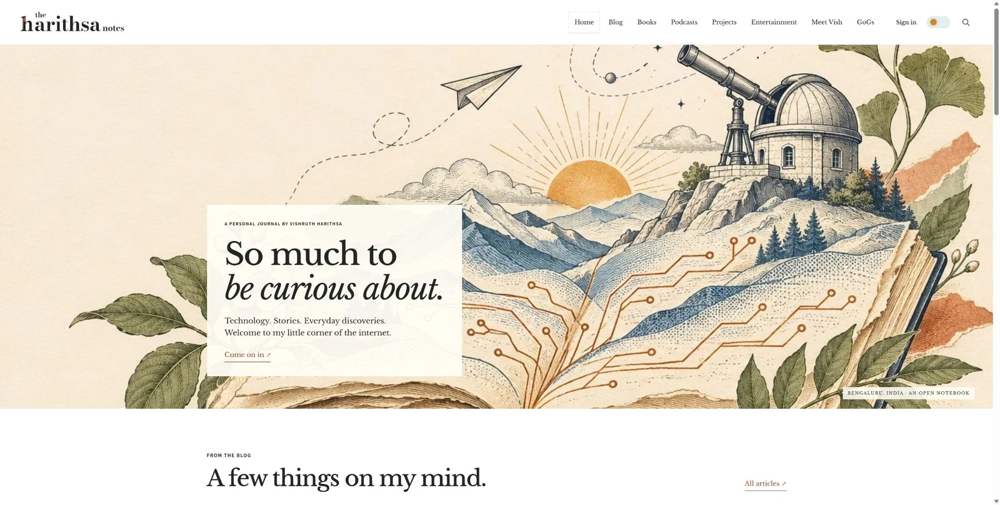
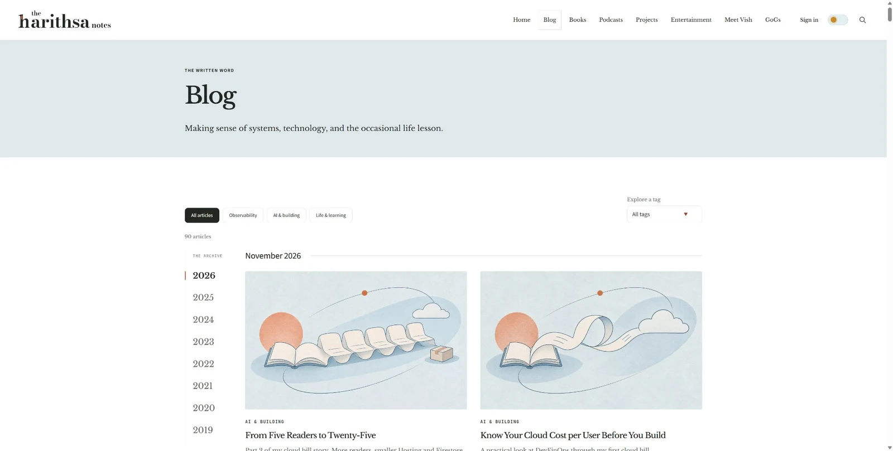
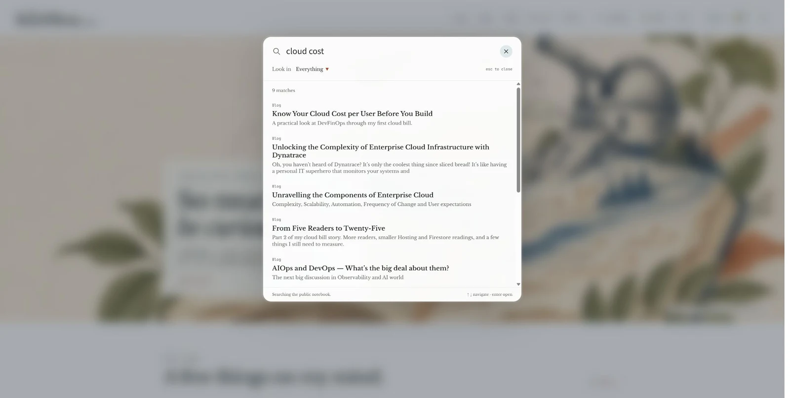

Product & documentation
A curious mind.
An open notebook.
Vishruth Harithsa’s personal site brings together writing on technology, notes on books and podcasts, projects, and photography.

Product demo
From a search to a story
Open site search, look up cloud cost, and follow a suggestion to the published article.
Read the article in the demoInside the notebook




Choose a guide
Product handbookBrowse the site, open the private reading room, or publish a post.
Technical guideFollow a request through Firebase and run the app locally.
Settings referenceFind appearance, cookie, invitation, and API key settings.
SDLC guideTake an issue through review, release, and recovery.
CI/CD pipelineSee which checks run and how Pages and Firebase ship.
RoadmapSee what readers can use today and what’s planned.
Release historyFind published versions and verified production updates.